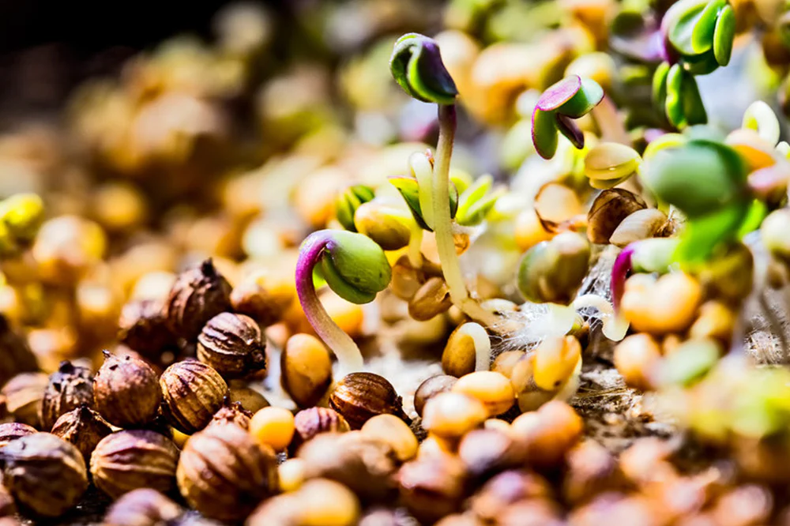

A G R I C U L T U R E
Organic Seeds

“Organic seeds are just that – organically grown. In other words, they are grown using sustainable methods from start to finish."
Organic seed crops, in contrast, are managed with an eye toward preventing disease; more and more this is done in protected environments that reduce disease pressure, greatly reducing the need for harmful chemicals. Seed produced organically is better suited to organic growing conditions.
As a seed company, it’s our job to find varieties that will perform reliably in a wide variety of conditions, and for us at High Mowing these are all-organic conditions. Our trials team identifies and selects varieties exhibiting high yields, strong disease resistances, genetic purity and exceptional flavor that are grown successfully using the same organic methods that will be utilized by our growers. So long as growers need reliable, organic varieties to plant, we will be there to heed the call, knowing that bringing these powerful tools to skilled hands will bring about good for all.
Why Organic?
It is our mission to provide the highest quality seed to growers and to do so without the use of environmentally harmful synthetic fertilizers and pesticides. There are several benefits to using organic seed:
The Safe Seed Pledge
The Safe Seed Pledge was created in 1999 when High Mowing Organic Seeds guided a coalition of 9 other seed companies in drafting a statement about the signers' stance on genetic engineering. To date the Pledge has been signed by over 370 seed companies worldwide. Since the signing of the Safe Seed Pledge, High Mowing has also taken the extra step of becoming Non-GMO Project verified.